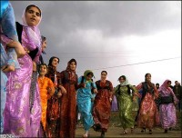

پذيرش > سایت نوشته ها > گفتگو با ثریا عزیزپناه
 فعال جنبش مدنی و زنان و سردبیر ماهنامه راسان فعال جنبش مدنی و زنان و سردبیر ماهنامه راسان

 گفتگو با ثریا عزیزپناه گفتگو با ثریا عزیزپناه
21 شهریور 1387 - برای یک ایران - نسخه قابل چاپ
برای یک ایران این بار پای صحبت خانم ثریا عزیزپناه، فعال جنبش مدنی و زنان و سردبیر ماهنامه "راسان" نشسته است. خانم عزیزپناه از مشکلات زنان کردستان و نارسایی فرهنگی این استان گفته است. از قتلهای ناموسی و پدیده خودسوزی زنان در کردستان
خانم عزیزپناه، شما به عنوان یکی از فعالین جنبش زنان و یکی از مدافعین حقوق بشر در ایران، فردی هستید که همزمان در چند عرصه فعالیت دارید. در عین حال مسوول نشریهای در کردستان هستید. علت این فعالیت گسترده شما چیست؟
بله. فعالیتهای من در چند عرصه و موضوع است. البته این سوال پیش میآید که آیا ضروریست که انسان در چند عرصه فعالیت کند؟ یا درست آن است که انسان در یک عرصه فعالیت کرده و همان عرصه و موضوع را به طور گسترده و درست پیش ببرد. اما شرایط به واقع به نوعیست و یا نیازآن به گونهای حس میشود که انسان نمیتواند خود را کنار بکشد، به واقع وقتی که آدمی میبیند که میتواند کاری انجام بدهد. به این سبب من در دو یا سه عرصه فعالیت میکنم و از آن جمله در کردستان یک نشریه را اداره میکنم. این نشریه " راسان" نام دارد.
البته باید گفت که نشریه " راسان" متاسفانه تنها نشریه مستقل کردستان است که در حال حاضر منتشر میشود. چون با کمال تاسف بسیاری از نشریات کردستان توقیف شده و در حال حاضر این تنها نشریه مستقل موجود در این استان است.
امسال چهارمین سال انتشار این نشریه است و ما خوشحالیم که به مدت چهار سال همچنان فعالیت داریم.
آیا این نشریه بصورت ماهانه منتشر میشود؟
: بله
به چه مسائلی در نشریه " راسان" میپردازید؟
مجوز رسمی نشریه " راسان" در زمینههای اجتماعی، اقتصادی، هنری، ادبی و فرهنگی است.
به چه زبانی این نشریه منتشر میشود و آیا میتوان از طریق انینترنت به آن دسترسی داشت؟
به دو زبان کردی و فارسی و سعی شده است که در بیشتر مواقع بطور مساوی به هردو زبان مقاله و مطلب منتشر شود. و از طریق اینترنت هم میتوان به این نشریه دسترسی یافت.
ما در نشریه " راسان" سعی کردیم، به لحاظ سیاسی تابع جو نشویم و خودمان را از آن دور کنیم. و بحثهای اجتماعی را در نشریه پیش ببریم. به نظر من و دوستان و همکارانم آن چیزی که اصل است در واقع بخش اجتماعی و نگاه اجتماعی ماست و مشکلاتی که ناشی از فرهنگ ماست. و این یک بخش پر رنگ نشریه ماست. مثلا فرض بفرمایید که زنی آنقدر تحت فشار و ظلم قرار گیرد که دست به خودکشی و خودسوزی بزند و یا قربانی قتل ناموسی شود.
ما این رامیپذیریم که اینها ناشی از فرهنگ ماست و چیزهای مستتر در آن است که زنها را به آن سمت سوق میدهد که دست به چنین کاری بزنند. هرچند که کار فوقالعاده دشواریست که انسان عیبهایش را قبول کند و راجع به آن صحبت کند، آن هم هنگامی که ما تحت فشار مسائل بیرون از خودمان هستیم. قبول کردن و قبولاندن این که این نارساییها معلول فرهنگ ماست و به عبارتی زیر سوال بردن آن کار آسانی نیست.
اما ما سعی کردیم که این نگاه را در نشریه "راسان" داشته باشیم و تداوم دهیم که ما هم در درون فرهنگ خودمان دارای معایبی هستیم و بهویژه در حوزه زنان.
در همین رابطه که فرمودید، آیا شما به مشکلات زنان کرد میپردازید یا مشکلات زنان به طور عمومی اشاره دارید؟ مثلا فرض بفرمایید تبعیض زن در تهران با تبعیض برای زن سنندجی در معنی میتواند متفاوت باشد. چون در اینجا میتواند تبعیض قومی و مذهبی نیز مطرح باشد. شما به این موضوع چگونه برخورد میکنید؟
نگاه ما چیزی چندمایه است. تمام چیزهایی که فرمودید میتواند این نگاه را تشدید کند. به اعتقاد من تبعیضی که به یک زن سمنانی یا اصفهانی اعمال میشود، بخش زیادش مشترک است. اما همانطور که گفتید بخشهایی هم داریم که این تبعیض را تشدید میکند که ممکن است ناشی از مسائل قومی یا تفاوت مذهبی یا ناشی از آداب و رسوم اجتماعی ما باشد.
مسئله زنان در ایران خیلی به لحاظ انسانی متفاوت نیست، مثلا از نظر اینکه باید به مسئله زنان پرداخته شود. مثلا در همان هیئت تحریریه کوچکمان هم ما مشکل داریم. چرا؟ به دلیل اینکه مردانی که در هیئت تحریریه ما همکاری میکنند، نه به لحاظ لجبازی و یا قصدشان ، بلکه به دلیلی که کاملا قابل قبول است، آنها به مسئله زنان فکر نمیکنند و مسئله زنان در اولویت کار این دوستان قرار ندارد. بحثهای ما در مدت این چهار سال بر سر ضرورت پرداختن به مسائل زنان تکرار میشود. یعنی در همان هیئت تحریریه کوچکمان هم بحث بر سر ضرورت پرداختن به مسائل زنان به عنوان نیمی از اعضای جامعه و به عنوان افراد تاثیر گذار در خانواده و جامعه وجود دارد.
اما نگاه به زن کردستان، متاسفانه نگاهی سطحی و ساده است، یعنی فرق نمیکند که زن تحصیل کرده باشد و یا خانهدار. حتی زنان نانآور خانواده هم تصور و یا ذهنیتی از این بابت ندارند که به لحاظ اظهار نظر و تصمیم گیریهای اساسی در خانواده و اجتماع نادیده گرفته میشوند.
در کردستان مسائل فرهنگی عامل تشدید کننده این نادیدهگرفتن هم شده است.
یعنی به کرات مشاهده میشود که خواهر بزرگتر حتی توسط برادر کوچکتر خود مورد عتاب و خطاب یا مورد ضرب و شتم قرار میگیرد. این مسئله که از طرف پدر و شوهر که پذیرفته شده است و در درون خانواده مورد سوال قرار نمیگیرد. مثلا اینکه زن در خانه چه بپوشد و چه نپوشد، کجا برود و نرود.اینها در واقع برخاسته از نگاه فرهنگی و اجتماعیست.چون کاری رویش صورت نگرفته و مهم نبوده که باید تغییر یابد. واقعا ما هنوز دست به گریبان پدیدههای بسیار سنتی در خانواده هستیم و به همین دلیل ما شاهد خودکشی و خودسوزی بسیاری از زنان در کردستان هستیم.
پدیده دوم قتل ناموسی است که بقول جوانها این هم شده مد روز و متاسفانه در استان بسیارزیاد مشاهده میشود.حتی مادر خانواده یا مادر شوهر نیز درخانواده وقتی که احساس کنند که زنی از اعضای خانواده حیثیت خانوادگی را زیر سوال میبرد، رای به کشتن او میدهند.آنها این نوع کشتن و مردن را حق خانواده میدانند و این هردو مورد ، خودکشی زنان و قتلهای ناموسی، برآیندهای فشار بر زنان کردستان است.
وضعیت عمومی کردستان را از نظر نقشی که مردم آن باید در گردانندن امور خود شان داشته باشند ، چگونه ارزیابی میکنید؟
متاسفانه این یک مشکل اساسی ماست که ازقبل هم وجود داشته و در طول این ۳۰ سال هم ما با آن مواجه بودیم. یعنی هنوز جو اعتماد وجود ندارد. یعنی که به هر ایرانی در محدوه جغرافیایی که در آن زندگی میکند، بتواند مسئولیتهای مهم و گوناگون را به عهده بگیرد و با تاسف باید بگویم که هنوز این اعتماد بسیار ناچیز است.اما اگر منصفانه بگویم ، قدمهای ناچیزی در این زمینه برداشته میشود، اما این قدر فشار زیاد است که مثلا ما به عینه دیدیم که وقتی کردی را در یک مسئولیتی گماردند، من خودم گفتم که ایکاش آن فارسزبان آنجا بود و کارها را به عهده میگرفت، چون مسئول کردزبان، آن چنان خودش را محدود میبیند و آنچنان نگران پست و صندلیاش است که کار محدودتر پیش میرود. زیرا که مسئول کردزبان به دلیل نگرانی و یا ناامنی ذهنی فکر میکند که اگر بخواهم کارها را پیش ببرم، ممکن است تصور شود که قوانین رعایت نشده و یا به نفع عدهای رعایت شده است.
البته باید گفت که اعتمادسازی یک روند است. یک برآیند است که نیاز به برنامهریزی دارد. انتظارمان از حاکمانمان این است که این اصل بدیهی و روشن را که ایران دارای قومیتهای متعدد است، بپذیرند. این چهارچوب همزیستی نیاز به برنامهریزی دارد و اعتمادسازی برآیندیست که در آن نقش فوقالعاده و اساسی دارد.
اما متاسفانه تا این لحظه این برنامهریزیها جاندار نبوده و از این قسمت هم مدام جو بیاعتمادی برانگیخته شده است. چرا که نمیتوانیم در پستهای مهم باشیم و حتی اگر استاندارمان هم کردزبان باشد، اما از بخش شیعهنشین کردستان است که آن هم فاکتور قومی را تشدید کرده و مسئله مذهب هم به آن افزوده میشود و احتیاج دارد به یک نگاه بیطرفانه که اگردر جایی نشسته است باید آن را درست ارزیابی کند.
برای یک ایران
ارسال به
بالاترین
،
توییتر
،
فریندفید
،
فیسبوک
در همين بخش :
 یک خبر تلخ؟ یک قانونشکنی؟ یک تصمیم بخشنامهای جدید؟ یک خبر تلخ؟ یک قانونشکنی؟ یک تصمیم بخشنامهای جدید؟
چرا بایست به سکسوالیته پرداخت؟ / نفیسه آزاد
آزارجنسی خانگی؛ «قربانی» نه، «نجات یافته»
زنان، بزرگترین بازندگان بهار عرب
سانسور از دیدگاه جنسیتی/الهه امانی
ديگر بخش ها :
طرح یک میلیون امضا
|
مقالات
|
سایت نوشته ها
|
اخبار
|
گزارش كمپين
|
گفت و گو
|
علیه سکوت
|
كوچه به كوچه
|
نامه های شما
|
گزارش ویژه
|
گفتگو با اعضا
|
ویژه سالگرد کمپین
|
تصویر برابری
|
دل آرام علی
|
تریبون
|
مقالات
|
تاریخ شفاهی
|
خارج از چارچوب
|
کتابخانه
|
درباره کمپین
|
کمپین در شهرها
|
کمپین در بند
|
صدای تغییر
|
ویژه 22 خرداد
|
لایحه حمایت از خانواده
|
گالری
|
عشا مومنی
|
امیر یعقوبعلی
|
خدیجه مقدم
|
راحله عسگری زاده و نسیم خسروی
|
پروین اردلان،جلوه جواهری، مریم حسین خواه، ناهید کشاورز
|
زینب پیغمبرزاده
|
سعیده امین، سارا ایمانیان، محبوبه حسین زاده، ناهید کشاورز و همایون نامی
|
احترام شادفر
|
نسیم سرابندی زاده،فاطمه دهدشتی
|
وبلاگ مهمان
|
پرونده خرم آباد
|
دستگیری ها
|
مریم مالک
|
پرستو اللهیاری
|
مهرنوش اعتمادی
|
سمیه رشیدی
|
Other Languages
|
همراهان
|
«فراخوان کمپین ده روز با بهاره هدایت»
| English
|